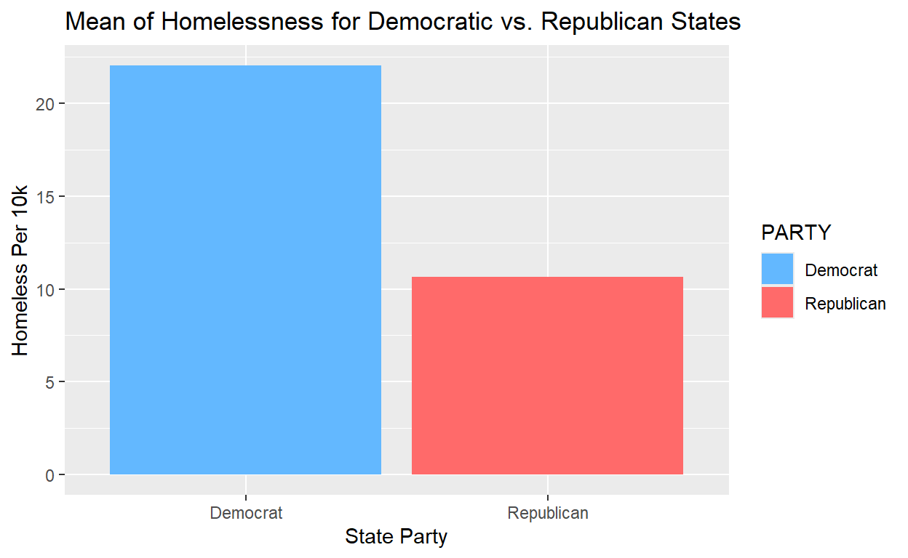
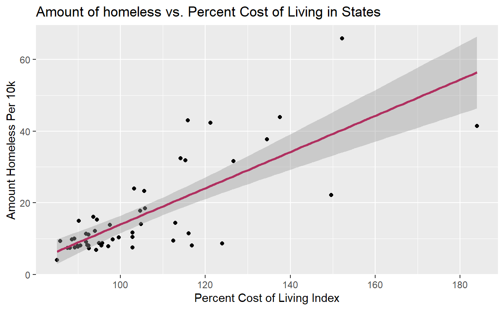
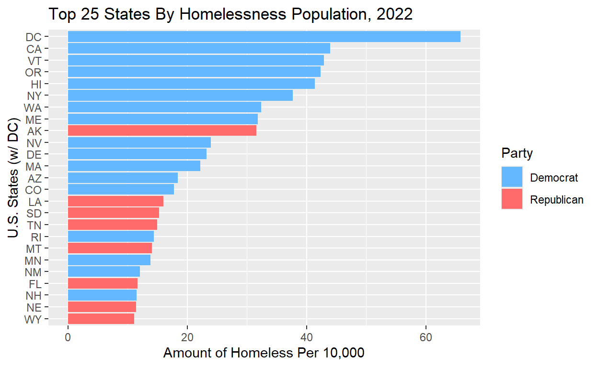
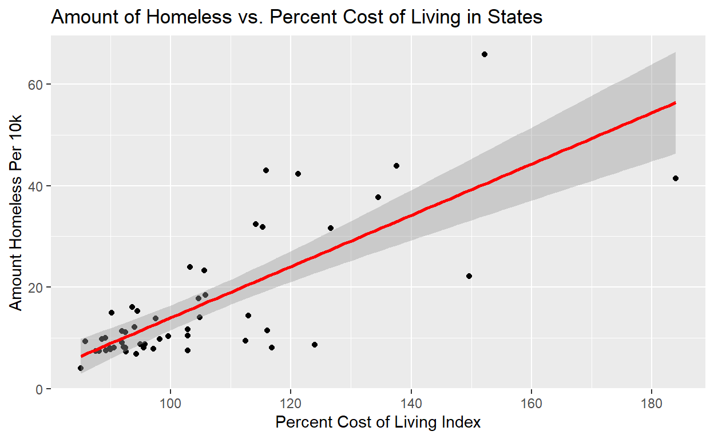

My final project
I am interested in exploring data related to elections and polling, policies in different states especially their before and effects (with an emphasis on policies addressing housing crises and homelessness), canvassing and social engineering (nudge theory). This may change or be expanded upon depending on how available certain data is and my interests later in the semester.
Do homelessness rates across U.S. states increase with cost of living? In this study, I plan to analyze the extent to which states cost-of-living indexes (COLI) affect their rates of homelessness. I hypothesize that if a state has a higher COLI, it will have a higher rate of homelessness per 10,000 people. In states with a higher cost of living, I suspect that the overall rate of homelessness will be higher. With higher cost-of-living indexes, basic necessities like food, housing, and utilities require a greater share of a person’s finances. With this, it is only reasonable to assume that there would be more particular strain on low-income and vulnerable individuals, making it easier to fall into and harder to escape cycles of homelessness. My sample is comprised of data on homelessness and unemployment rates, cost-of-living indexes, along with the factors used to calculate it, and more, across all 50 states and the District of Columbia. My unit of analysis is State (e.g., Hawaii). The explanatory variable of interest is the cost-of-living index (COLI). That is how much a state is above or below the national average of cost of living, with a value of 100 being the national average. Any value over 100 is above the national average and any value below is lower than the national average. My outcome variable is homelessness, with it being the amount of homeless per 10k in a state. For example, Alabama has a homelessness value of 7.39, which means it has an average of 7.39 people experiencing homelessness per 10k. These variables are taken from Thomas F. Heston’s data set on the cost-of-living and homelessness. If I observe a positive relationship between rates of homelessness and cost-of-living indexes in states, this would suggest my hypothesis to be true. As in, homelessness rates increasing with higher cost-of-living indexes and decreasing with lower. On the other hand, if I observe a negative relationship, such as higher rates of homelessness in states with lower cost-of-living indexes, this would prove my hypothesis to be false. When running my regression analysis on this, a positive and significant coefficient would suggest support for my hypothesis.
homeless <- read_xlsx("data/20230919-DATA-SOURCES.xlsx")
homeless# A tibble: 51 × 27
STATE HOMELESSNESS UNEMPLOYMENT COLI GROCERY HOUSING UTILITIES
<chr> <dbl> <dbl> <dbl> <dbl> <dbl> <dbl>
1 Alabama 7.39 2.5 88.1 97.6 69.6 101.
2 Alaska 31.6 3.8 127. 134. 121. 146.
3 Arizona 18.4 3.7 106. 102. 121. 100.
4 Arkansas 8.07 3.2 90.6 92.7 77.9 97.5
5 Californ… 44.0 4.3 138. 115. 194. 124.
6 Colorado 17.8 2.9 105. 95.3 120. 91.1
7 Connecti… 8.08 4 117. 103 126. 130.
8 Delaware 23.3 4.6 106. 105. 105. 94.3
9 District… 65.8 4.7 152. 109. 252. 113.
10 Florida 11.7 2.6 103. 105. 108. 101.
# ℹ 41 more rows
# ℹ 20 more variables: TRANSPORTATION <dbl>, HEALTH <dbl>,
# POVERTY <dbl>, GDP <dbl>, DRUGODMORTALITY <dbl>, INCOME <dbl>,
# PRISONERS <dbl>, GAS <dbl>, GINI <dbl>, TAXES <dbl>,
# HOUSINGBURDEN <dbl>, ETOHBINGE <dbl>, OPIOIDRX <dbl>,
# SMOKERS <dbl>, HSGRAD <dbl>, CIGEXCISE <dbl>, ALCOHOL <dbl>,
# PARTY <dbl>, POP <dbl>, SANCTUARY <dbl>head(homeless)# A tibble: 6 × 27
STATE HOMELESSNESS UNEMPLOYMENT COLI GROCERY HOUSING UTILITIES
<chr> <dbl> <dbl> <dbl> <dbl> <dbl> <dbl>
1 Alabama 7.39 2.5 88.1 97.6 69.6 101.
2 Alaska 31.6 3.8 127. 134. 121. 146.
3 Arizona 18.4 3.7 106. 102. 121. 100.
4 Arkansas 8.07 3.2 90.6 92.7 77.9 97.5
5 California 44.0 4.3 138. 115. 194. 124.
6 Colorado 17.8 2.9 105. 95.3 120. 91.1
# ℹ 20 more variables: TRANSPORTATION <dbl>, HEALTH <dbl>,
# POVERTY <dbl>, GDP <dbl>, DRUGODMORTALITY <dbl>, INCOME <dbl>,
# PRISONERS <dbl>, GAS <dbl>, GINI <dbl>, TAXES <dbl>,
# HOUSINGBURDEN <dbl>, ETOHBINGE <dbl>, OPIOIDRX <dbl>,
# SMOKERS <dbl>, HSGRAD <dbl>, CIGEXCISE <dbl>, ALCOHOL <dbl>,
# PARTY <dbl>, POP <dbl>, SANCTUARY <dbl>homeless1 <- homeless |>
mutate(PARTY = if_else(PARTY == 1, "Republican", "Democrat")) |>
group_by(PARTY) |>
summarize(mean_homeless = mean(HOMELESSNESS))
homeless1# A tibble: 2 × 2
PARTY mean_homeless
<chr> <dbl>
1 Democrat 22.0
2 Republican 10.6| State Party | Mean Homeless Per 10k |
|---|---|
| Democrat | 22.033 |
| Republican | 10.649 |
ggplot(homeless1, aes(x = PARTY, y = mean_homeless, fill = PARTY)) +
geom_col() +
scale_fill_manual(values =
c("Democrat" = "steelblue1",
"Republican" = "indianred1")) +
labs(x = "State Party",
y = "Homeless Per 10k",
title = "Mean of Homelessness for Democratic vs. Republican States")
homeless |>
ggplot(aes(x = COLI, y = HOMELESSNESS)) +
geom_point()+
geom_smooth(method = "lm", color = "maroon") +
labs(x = "Percent Cost of Living Index",
y = "Amount Homeless Per 10k",
title = "Amount of homeless vs. Percent Cost of Living in States")
This is a visualization that plots the amount of homeless per 10k in a state with its cost-of-living index (homeless per 10k in y axis [my dependent variable] and percent COLI in the x axis [my independent variable]) into a series of points. It then attempts to fit a linear regression line through these points. In the graph, it shows an increase (or upward trend/slope) in amount of homeless per 10k as the percent cost of living index goes up. This suggests that my hypothesis may be right, as it shows a positive relationship rather than a negative or absent relationship. This is corroborated in the table below. The first value presented is the predicted amount of homeless per 10k when COLI is at 0. The more interesting value is the 0.5045 under COLI, which is the predicted increase in homeless per 10k in a state for every percentage point increase in COLI. Since this is a positive value, it is showing a positive relationship between increase in COLI and amount of homeless, as indicated before in the graph. Additionally, since a value of 1 in amount of homeless in 10k is representative of 10k people, 0.5 is representative of an increase in 5000 people homeless which is a large amount and suggests a significant relationship between the two variables, furthering support for my hypothesis. It is worth noting that this analysis and visualization does not take into account possible confounder variables such as leading party in a state, which could affect COLI since democratic states could be ones that are more expensive to live in and they could have more homeless friendly policies which may increase the amount of homeless living there (homeless may move there or not want to leave there as much as red states) and vice versa.
lm(HOMELESSNESS ~ COLI, data = homeless)
Call:
lm(formula = HOMELESSNESS ~ COLI, data = homeless)
Coefficients:
(Intercept) COLI
-36.4553 0.5045 With higher rates of homelessness every year, and no clear end in sight, the U.S. is facing a homelessness epidemic of mass proportion. One could point at a number of causes such as stagnant wages, the COVID-19 pandemic, and mass wealth inequality. However, while the issue of homelessness is complex and multifaceted, I suspect that there is a main correlation with increasing rates of homelessness: a state’s Cost of Living Index (COLI). Using data derived from a 2023 study on homelessness, I plan to analyze the extent to which cost of living correlates with state rates of homelessness. I wish to answer the question: Do homelessness rates across U.S. states increase with their cost of living index? I hypothesize that if a state has a greater COLI, it will have a higher rate of homelessness per 10,000 people. In other words, in states with a higher cost of living, I suspect that the overall rate of homelessness will be greater, indicating a positive relationship between the two variables. This topic is particularly important and interesting because it affects real people. With higher cost of living indexes, basic necessities like food, housing, and utilities require a greater share of a person’s finances. With this, it is only reasonable to assume that this would put more particular strain on low-income and vulnerable individuals, making it easier to fall into and harder to escape the homelessness cycle. By identifying a correlating relationship between homelessness rates and Cost of Living Index, policy makers can then make more informed choices and redirect resources on the development and continuance of initiatives that seek to lower these two variables.
My data set is borrowed from Thomas F. Heston’s study titled “The Cost of Living Index as a Primary Driver of Homelessness in the United States: A Cross-State Analysis.” (Heston 2023)
Heston TF. The Cost of Living Index as a Primary Driver of Homelessness in the United States: A Cross-State Analysis. Cureus. 2023;15(10):e46975. Published 2023 Oct 13. doi:10.7759/cureus.46975
The sample includes data on homelessness and unemployment rates, cost-of-living indexes, along with the factors used to calculate it, and more, across all 50 states and the District of Columbia. This data was collected in September 2023 and can be found below.
Thomas F. Heston MD. (2023). tomheston/Cost-of-Living-Index-as-a-Primary-Driver-of-Homelessness: Data and Python Code for Random Forest Model (v1.0.0). Zenodo. https://doi.org/10.5281/zenodo.8361394
My unit of analysis is State (e.g., Hawaii). The explanatory variable of interest is the cost-of-living index (COLI). That is how much a state is above or below the national average of cost of living, with a value of 100 being the national average. Any value over 100 is above the national average and any value below is lower than the national average. In the original study, the COLI data was taken from a 2022 Missouri Economic Research and Information Center Cost of Living Data Series report, in which it compiled publicly available data on all 50 states cost of living indexes and other information. The link to this report can be found below.
My outcome variable is homelessness or the amount of homeless per 10k in a state. For example, Alabama has a homelessness value of 7.39, which means it has an average of 7.39 people experiencing homelessness per 10k. This data was compiled from Luke Williams 2023 report “Homelessness in the United States: A State-by-State comparative Analysis,” in which he breaks down publicly available homelessness data presented in the 2022 Annual Homeless Assessment Report by the United States Department of Housing and Urban Development. The link to this article can be found below.
All other data from this study was taken from a variety of sources, which can found in the data package linked above.
The graph below is a summary of my main outcome variable, for your viewing pleasure.


This is a visualization that plots the amount of homeless per 10k in each of the states with its cost-of-living index (homeless per 10k in y axis [my dependent variable] and percent COLI in the x axis [my independent variable]) into a series of points. It then attempts to fit a linear regression line through these points. This is used to measure my main coefficient of interest, which is whether increased cost of living within states correlates with higher rates of homelessness. In the graph, it shows an increase (or upward trend/slope) in amount of homeless per 10k as the percent cost of living index goes up. This suggests that my hypothesis may be right, as it shows a positive relationship rather than a negative or absent relationship. This is corroborated in the table below. The first value presented is the predicted amount of homeless per 10k when COLI is at 0. The more interesting value is the 0.505 under COLI, which is the predicted increase in homeless per 10k in a state for every percentage point increase in COLI. Since this is a positive value, it is showing a positive relationship between increase in COLI and amount of homeless, which is corroborated above in the graph. Additionally, since a value of 1 in amount of homeless in 10k is representative of 10k people, 0.5 is representative of an increase in 5000 people homeless which is a substantially large amount. Taking this into account, along with the p value being close to zero, it indicates that there is a statistically significant relationship between cost of living within a state and its homelessness population. It is worth noting that this analysis and visualization cannot and should not be interpreted as causal. This is because we cannot have a randomized controlled study, as to do so would be extremely difficult and unethical. This visualization and analyis also does not take into account possible confounder variables such as leading party in a state, which could affect COLI. For example, democratic states could be ones that are more expensive to live in (i.e. more taxes, etc) and they could possibly have more homeless friendly policies which may increase the amount of homeless living there (homeless may move there or not want to leave there as much as red states) and vice versa. See the paragraph below this table for my analysis of this.
| Variable | Change | SD Error | Stat | P Val |
|---|---|---|---|---|
| (Intercept) | -36.455 | 6.543 | -5.572 | 0 |
| COLI | 0.505 | 0.061 | 8.223 | 0 |
The table below represents a multiple regression using both cost of living and party in a state. Basically, we are analyzing how different factors like cost of living or party affiliation affect homelessness rates in states. The first value is homelessness when COLI and party is held at zero. This is impossible since you cannot have a COLI that is zero. The second, and what we are actually measuring, is COLI when party is held at a constant–when it is added as a factor. This means were comparing the cost of living index between states that are democrat or republican. We are doing this to measure if it is a confounder variable. In our original regression the change was 0.505 and when taking into account party it changes to 0.484. This is not a large change in amount of homeless per one percentage point increase of cost of living. Additionally, since we have such a large p value (0.605) for party, which way higher than the standard measure of 0.05, it shows that party is not a statistically significant variable. Both of these indicate that party is not a major confounder within our dataset. However,there are still possibilities of other major confounders such as a state’s population. For example, one could assume that states with higher populations may have more competetion for limited housing and resources driving up both the cost of living index and homelessness rate.
| Variable | Change | SD Error | Stat | P Val |
|---|---|---|---|---|
| (Intercept) | -33.635 | 8.531 | -3.943 | 0.000 |
| COLI | 0.484 | 0.073 | 6.655 | 0.000 |
| PARTY | -1.469 | 2.820 | -0.521 | 0.605 |
library(tidyverse)
library(readxl)
library(ggplot2)
homeless <- read_xlsx("data/20230919-DATA-SOURCES.xlsx")
homeless
head(homeless)
homeless1 <- homeless |>
mutate(PARTY = if_else(PARTY == 1, "Republican", "Democrat")) |>
group_by(PARTY) |>
summarize(mean_homeless = mean(HOMELESSNESS))
homeless1
knitr::kable(homeless1, digits = 3, col.names = c("State Party", "Mean Homeless Per 10k"))
ggplot(homeless1, aes(x = PARTY, y = mean_homeless, fill = PARTY)) +
geom_col() +
scale_fill_manual(values =
c("Democrat" = "steelblue1",
"Republican" = "indianred1")) +
labs(x = "State Party",
y = "Homeless Per 10k",
title = "Mean of Homelessness for Democratic vs. Republican States")
homeless |>
ggplot(aes(x = COLI, y = HOMELESSNESS)) +
geom_point()+
geom_smooth(method = "lm", color = "maroon") +
labs(x = "Percent Cost of Living Index",
y = "Amount Homeless Per 10k",
title = "Amount of homeless vs. Percent Cost of Living in States")
lm(HOMELESSNESS ~ COLI, data = homeless)
library(tidyverse)
library(readxl)
library(ggplot2)
library(infer)
library(broom)
homeless <- read_xlsx("data/20230919-DATA-SOURCES.xlsx")
homeless <- homeless |>
mutate(party_aff = if_else(PARTY == 1, "Republican", "Democrat"),
STATE = case_when(
STATE == "Alabama" ~ "AL",
STATE == "Alaska" ~ "AK",
STATE == "Arizona" ~ "AZ",
STATE == "Arkansas" ~ "AR",
STATE == "California" ~ "CA",
STATE == "Colorado" ~ "CO",
STATE == "Connecticut" ~ "CT",
STATE == "Delaware" ~ "DE",
STATE == "Florida" ~ "FL",
STATE == "Georgia" ~ "GA",
STATE == "Hawaii" ~ "HI",
STATE == "Idaho" ~ "ID",
STATE == "Illinois" ~ "IL",
STATE == "Indiana" ~ "IN",
STATE == "Iowa" ~ "IA",
STATE == "Kansas" ~ "KS",
STATE == "Kentucky" ~ "KY",
STATE == "Louisiana" ~ "LA",
STATE == "Maine" ~ "ME",
STATE == "Maryland" ~ "MD",
STATE == "Massachusetts" ~ "MA",
STATE == "Michigan" ~ "MI",
STATE == "Minnesota" ~ "MN",
STATE == "Mississippi" ~ "MS",
STATE == "Missouri" ~ "MO",
STATE == "Montana" ~ "MT",
STATE == "Nebraska" ~ "NE",
STATE == "Nevada" ~ "NV",
STATE == "New Hampshire" ~ "NH",
STATE == "New Jersey" ~ "NJ",
STATE == "New Mexico" ~ "NM",
STATE == "New York" ~ "NY",
STATE == "North Carolina" ~ "NC",
STATE == "North Dakota" ~ "ND",
STATE == "Ohio" ~ "OH",
STATE == "Oklahoma" ~ "OK",
STATE == "Oregon" ~ "OR",
STATE == "Pennsylvania" ~ "PA",
STATE == "Rhode Island" ~ "RI",
STATE == "South Carolina" ~ "SC",
STATE == "South Dakota" ~ "SD",
STATE == "Tennessee" ~ "TN",
STATE == "Texas" ~ "TX",
STATE == "Utah" ~ "UT",
STATE == "Vermont" ~ "VT",
STATE == "Virginia" ~ "VA",
STATE == "Washington" ~ "WA",
STATE == "West Virginia" ~ "WV",
STATE == "Wisconsin" ~ "WI",
STATE == "Wyoming" ~ "WY",
STATE == "District of Columbia" ~ "DC"
))
homeless_top25 <- homeless |>
slice_max(HOMELESSNESS, n = 25)
top25 <- ggplot(homeless_top25,
aes(x = HOMELESSNESS,
y = fct_reorder(STATE, HOMELESSNESS),
fill = party_aff)) +
geom_col() +
scale_fill_manual(values = c("Republican" = "indianred1",
"Democrat" = "steelblue1")) +
labs(
title = "Top 25 States By Homelessness Population, 2022",
y = "U.S. States (w/ DC)",
x = "Amount of Homeless Per 10,000",
fill = "Party"
)
top25
homeless_lm_graph <- homeless |>
ggplot(aes(x = COLI,
y = HOMELESSNESS)) +
geom_point()+
geom_smooth(method = "lm",
color = "red") +
labs(x = "Percent Cost of Living Index",
y = "Amount Homeless Per 10k",
title = "Amount of Homeless vs. Percent Cost of Living in States")
homeless_lm_graph
lm_homeless <- lm(HOMELESSNESS ~ COLI, data = homeless)
lm_homeless_tab <- tidy(lm_homeless) |>
knitr::kable(col.names = c("Variable", "Change", "SD Error", "Stat", "P Val"), digits = 3)
lm_homeless_tab
lmmult <- lm(HOMELESSNESS ~ COLI + PARTY, data = homeless)
lmmult_tab <- tidy(lmmult) |>
knitr::kable(col.names = c("Variable", "Change", "SD Error", "Stat", "P Val"), digits = 3)
lmmult_tab